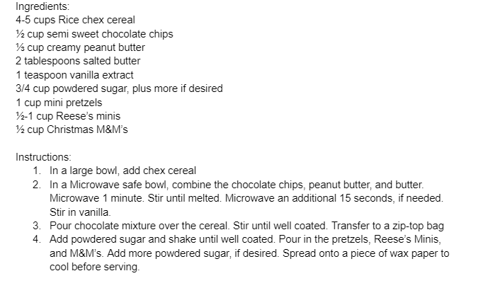

Back to Desserts
Christmas traditions are very nostalgic and so eating a treat from a specific time of year from your childhood is meaningful and makes me happy because it reminds me I still believe in Christmas magic. - Alysa Keller
